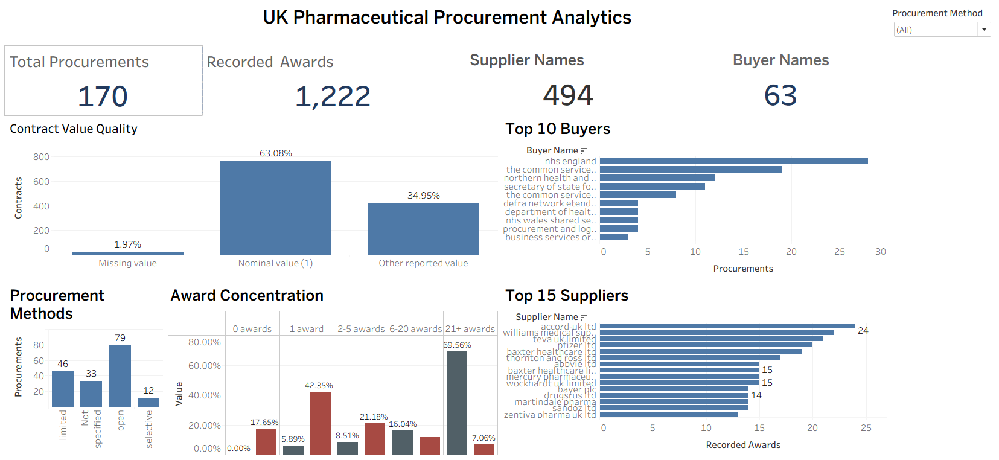

UK Pharmaceutical Procurement Analytics
How reliably can procurement activity be understood when award counts are highly concentrated and financial reporting is incomplete?
I developed a MySQL analytical model and interactive Tableau dashboard to investigate 2024 UK pharmaceutical procurement records, covering 170 procurement processes and 1,222 awards.
The analysis revealed that just 12 procurement processes generated 69.56% of award records, while approximately 65% of contract records contained missing or nominal values. These findings highlight why award activity and reported spending must be interpreted separately.
The dashboard enables exploration of supplier participation, buyer activity, procurement methods, and data quality, providing a transparent foundation for procurement analysis.